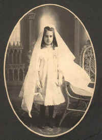
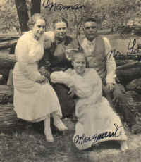
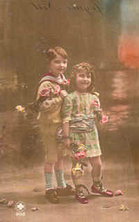
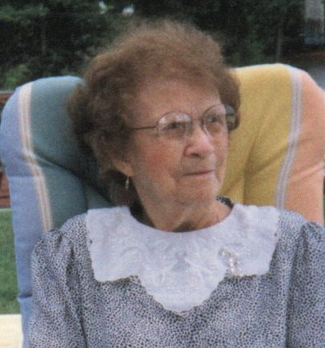

|
Marie-Anna
Caron naît le 27 avril 1897 au 54 rue Delinelle à Saint-Henri. Ses
parents, Arthur Caron et Alphonsine Gagnon, sont originaires du
Bas-du-Fleuve. Ils se sont mariés en 1891 à Montréal et ont déjà un
fils, Jean, né le 11 octobre 1893.
L'autre frère de Marie-Anna, Antonio, naît le 26 octobre 1899. Puis,
en 1901, un autre prénommé
Arthur, mais il décède l'année suivante.
Le père de Marie-Anna est ferblantier.
|

Les parents de
Marie-Anna
|

Marie-Anna et ses frères
|

Marie-Anna lors de sa première communion
|

Marie-Anna lors de la première communion de son
frère Antonio
|

Le 31 octobre
1904, un grand bouleversement se produit dans la jeune vie de
Marie-Anna: son père meurt à l'âge de 37 ans. La famille
continue d'habiter le 54 Delinelle, St-Henri. C'est
par le recensement de 1911 que nous apprenons les moyens de subsistance
d'Alphonsine. Elle déclare comme métier "laveuse pour des
particuliers". Autrement dit, elle lave chez-elle le linge des
autres, elle l'empèse si nécessaire, et elle le repasse. Sa clientèle
doit être les célibataires et les gens mieux
nantis du quartier. Les buanderies commerciales ne voient le jour que la
décennie suivante. Dans le même recensement, nous apprenons aussi que
Jean, le fils aîné, 17 ans, a comme métier "chartier".
Il travaille 60 heures par semaine, 52 semaines par année, et il a gagné
350$ l'année précédente. La majeure partie de cet argent est sûrement
remise à sa mère, comme le veut la coutume de cette époque.
 Alphonsine
épouse en secondes
noces, le 13 septembre 1913, Zénon Laframboise, un menuisier, veuf
depuis peu. Elle le connaît sans doute depuis quelques années car Zénon,
sa femme Célina Jasmin et leur fille Marguerite, née en février 1900,
habitent tout près, au 455 rue Ste-Émélie, depuis au moins 1908. Alphonsine
et ses enfants emménagent chez.
Zénon.
Marie-Anna appelle Marguerite Laframboise
sa "sœur", elles sont donc probablement amies depuis
longtemps. Lorsque Alphonsine et Zénon se marient, ce sont déjà des
adolescentes
 Marie-Anna est sûrement une jeune fille type de la classe moyenne
dans laquelle elle grandit. Marie-Anna est sûrement une jeune fille type de la classe moyenne
dans laquelle elle grandit.
Elle reçoit une bonne éducation et
fréquente peut-être un pensionnat dirigé par une communauté de
religieuses, comme c'est la mode à l'époque.
On y prépare les jeunes filles à tenir leur rôle d'épouse et de mère
dans la société canadienne-française catholique de ce 20ème siècle qui
débute.
DES
AMIES POUR LA VIE
Marie-Anna aura
toute sa vie de bonnes amies, on en retrouve même sur les photos de
groupe lors des mariages de ses enfants. L'amitié avec une d'entre
elles, Imelda Verreault, commence à l'enfance. Elles sont nées toutes
les deux en 1897, ce sont des voisines, Marie-Anna habitant au 54 et
Imelda au 63 rue Delinelle.
Imelda se marie la première avec un monsieur Henri Philippe. En 1916,
Marie-Anna leur adresse ses meilleurs vœux de fin d'année, et les
invite à son mariage pour le mois suivant. M. Philippe sera le
comptable du garage de
Rosario, époux de Marie-Anna. La fille d'Imelda, Rachel, épousera
le fils de Marie-Anna, Rosaire. Plus tard, Imelda vivra de nombreuses
années au 7078 Des Écores, soit un des logements ayant déjà
appartenu à Marie-Anna. Imelda meurt en 2002 à l'âge de 104 ans.
|
CARTES ENVOYÉES PAR
MARIE-ANNA À IMELDA |
|

|

|

|
|

|

|

|
|

Imelda Verreault-Philippe, 1990 |

|